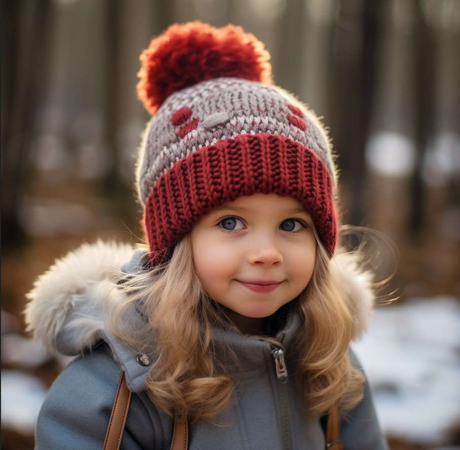

Вязание своими руками
тепло для души
Откройте мир уютных петель, авторских узоров и натуральной пряжи. Сотни идей для вдохновения, мастер-классы и тёплое комьюнити рукодельниц.
Начать вязать Смотреть работы
Почему вязание — это стильно и полезно?
Терапия творчеством
Снимает стресс, развивает мелкую моторику и дарит состояние потока. Вяжите с удовольствием!
Уникальный гардероб
Создавайте свитера, кардиганы, шарфы и аксессуары, которых больше ни у кого не будет.
Экологичность
Натуральная пряжа, ручная работа и осознанное потребление — вклад в планету.
Уроки для всех уровней
От набора петель до сложных аранов и жаккарда. Поддержка в чате и видеоуроки.
Вдохновляющие работы

Свитер «Облако»
Мягкий меринос, узор «рис» — идеально для прохладных вечеров.

Снуд «Зимняя сказка»
Объёмные косы, цвет «пыльная роза», связан за один вечер.

Норвежская шапочка
Норвежские узоры — уют в каждой детали интерьера.

Детская шапочка из Мериноса «Малышка»
Меринос + нежная вязка, подарок для самых маленьких.
Бесплатные уроки вязания
Как выбрать пряжу и спицы
Изучаем состав, толщину нити, подбираем инструмент для идеального результата без разочарований.
ЧитатьЧтение схем и узоров
Научитесь понимать условные обозначения и вязать даже самые сложные аранские переплетения.
Смотреть урокРеглан сверху без швов
Мастер-класс по бесшовному вязанию свитера: расчёт петель, прибавки, идеальная посадка.
ПодробнееЖаккард для начинающих
Техника многоцветного вязания без протяжек — создавайте яркие орнаменты с лёгкостью.
Перейти к уроку